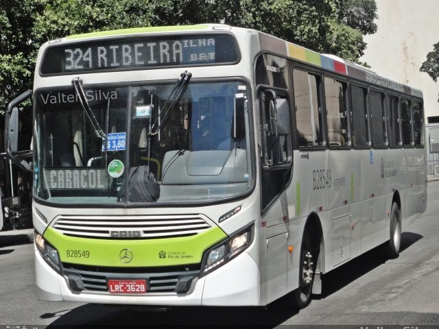
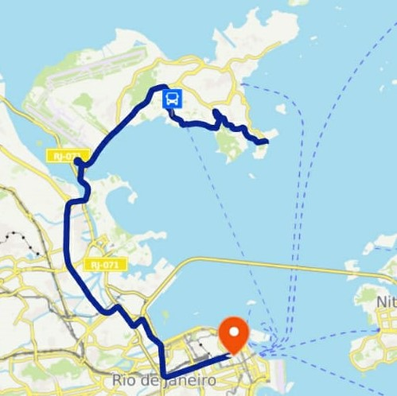
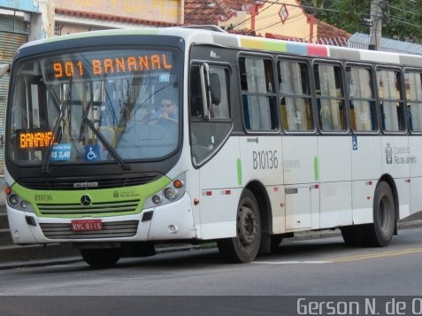
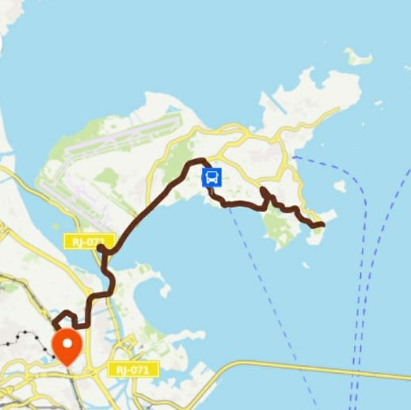
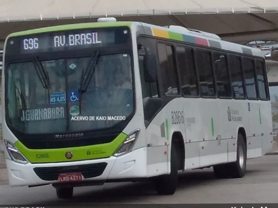
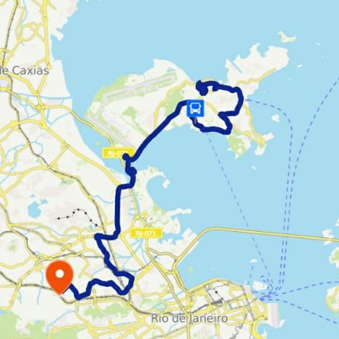
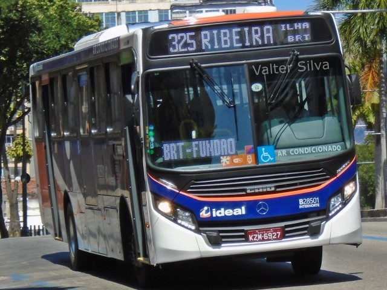
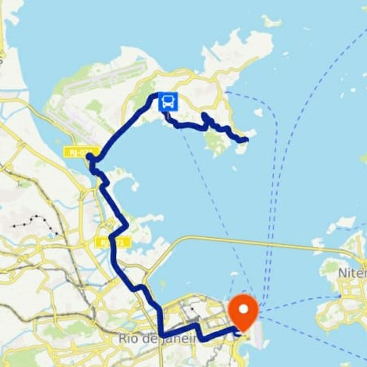
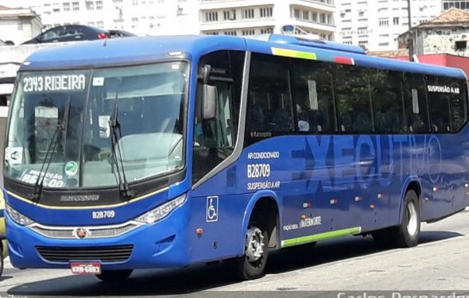
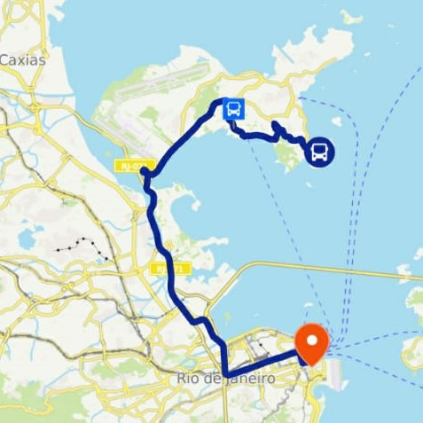

Linha de Ônibus
324
 Para começar temos a linha 324. Administrada pela Transportes Paranapuan S/A, possui uma frota totalmente equipada com Ar Condicionado e carros bi-roletados. Em horários regulares a linha leva passageiros da Ilha do Governador e de parte da Av. Brasil ao centro da cidade. Em horários de pico todos os ônibus dessa linha ficam parados, distribuídos uniformemente pelo trecho da Av. Brasil que faz parte de suas rotas.
901
 A 901 é mais uma linha da Transportes Paranapuan, mas nesse caso, a frota não está lá essas coisas. Os ônibus são menores, sem ar condicionado, e apenas uma roleta. A nova rota vai do Terminal da Ribeira até a estação de trem de Bonsucesso. A transportadora promete ônibus passado a cada 20 minutos, mas na realidade o intervalo está mais lá para os 40 minutos.
696
 Ah o 696... linha que liga a Ilha ao Méier e passa a cada 5 minutos (principalmente quando você não precisa dela, é claro). A frota está bem cuidada e conta com ar condicionado e elevadores centrais. A linha sai da Praia do Dendê, dá uma boa volta dentro da própria Ilha do Governador antes de pegar a Av. Brasil. Não me pergunte o resto da rota. O que importa é que, de alguma forma mágica, ela chega na estação de trem do Méier. o que mais me preocupa é: Por que alguém iria querer ir pro Meier?
325
 Chegamos no ápice. A linha 325 é tudo que qualquer linha de ônibus sonha em ser. Com a nova frota equipada com Ar Condicionado, elevadores centrais, roletas duplas, entradas para carregadores USB em todos os assentos, nova pintura e Wi-fi. Isso mesmo, você não leu errado: os ônibus da linha 325 são todos equipados com Wi-Fi gratuito. Isso sem contar os motoristas que são os mais simpáticos de toda Ilha do Governador e o preço que são os R $4,05 de qualquer outro ônibus urbano no Rio de Janeiro. Todo esse conforto é proporcionado pela Viação ideal aos seus passageiros que vão do Terminal da Ribeira até o ponto final no Castelo. Em situações normais, os ônibus costumam passar de 20 em 20 minutos. A única coisa que a Viação Ideal poderia fazer para melhorar essa linha seria adicionar mais ônibus à frota, de modo a reduzir o intervalo e fazendo com que os ônibus circulassem mais vazios.
925


Dizem as lendas que essa é uma linha que circula somente dentro da Ilha do Governador e leva passageiros do Aeroporto do Galeão até os Bancários. Aqueles que relatam terem visto esses ônibus falam que os carros são os mesmos da linha 325, equipados com tudo do bom e do melhor, mas não se sabe ao certo.
2343
 Por último, mas sem dúvida não menos importante, temos o 2343, o FRESCÃO. Sua rota vai do terminal da Ribeira até seu ponto final no Castelo, passando diretamente pela linha vermelha, sem paradas na Ilha do Fundão. A frota é equipada com Ar Condicionado, iluminação individual dos assentos, suspensão a ar e cadeiras com maior conforto. Como é de se esperar de uma linha de ônibus executivos, o preço é mais elevado. Nos horários regulares custa R $8, nos horários de pico chega a R $12.